Regression comparison
Download resultsAggregation weights
Coefficients can be negative and need not sum to one. Intervals describe coefficient uncertainty; the dashed reference is DE’s fixed 1/H weight.
BDKN
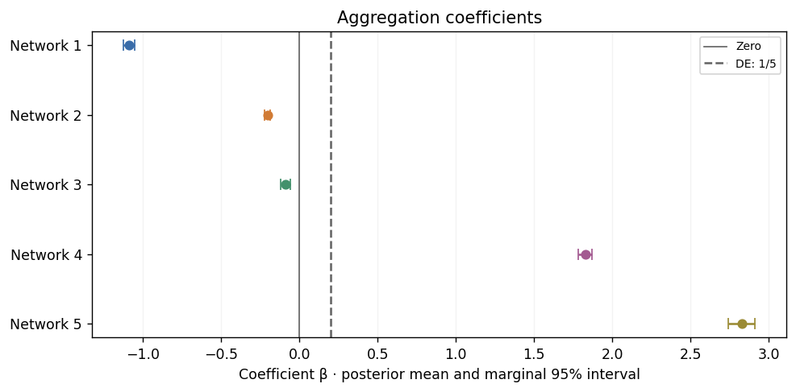

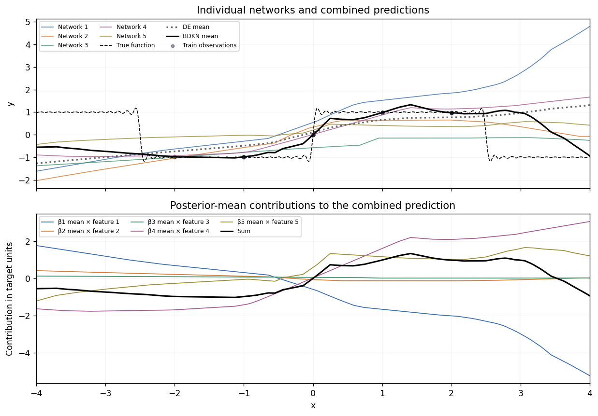
Each density panel uses its own X range for readability; coefficient intervals above share a common axis. Prior reference conditions on fitted noise. Contribution shares use held-out inputs; test targets are used only for scoring.
| Network | β mean | 95% low | 95% high | P(β > 0) | Contribution share | Test RMSE | Test NLL |
|---|---|---|---|---|---|---|---|
| 1 | -1.08889 | -1.12321 | -1.05456 | 0.00000 | 0.37187 | 2.23561 | 24.15182 |
| 2 | -0.20365 | -0.22217 | -0.18513 | 0.00000 | 0.03441 | 1.28450 | 3.71973 |
| 3 | -0.08854 | -0.11880 | -0.05827 | 0.00000 | 0.01182 | 1.22805 | 6.39771 |
| 4 | 1.82726 | 1.78476 | 1.86977 | 1.00000 | 0.39180 | 1.38488 | 53.78197 |
| 5 | 2.82827 | 2.74286 | 2.91369 | 1.00000 | 0.19009 | 1.06486 | 1.58756 |
Functional repulsion · BDKN
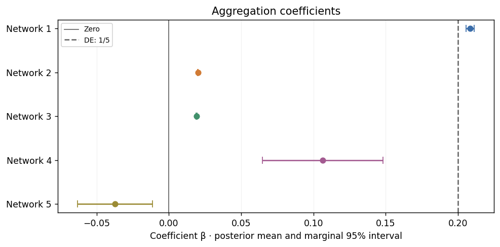
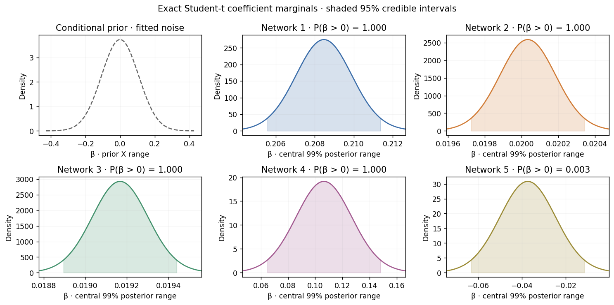
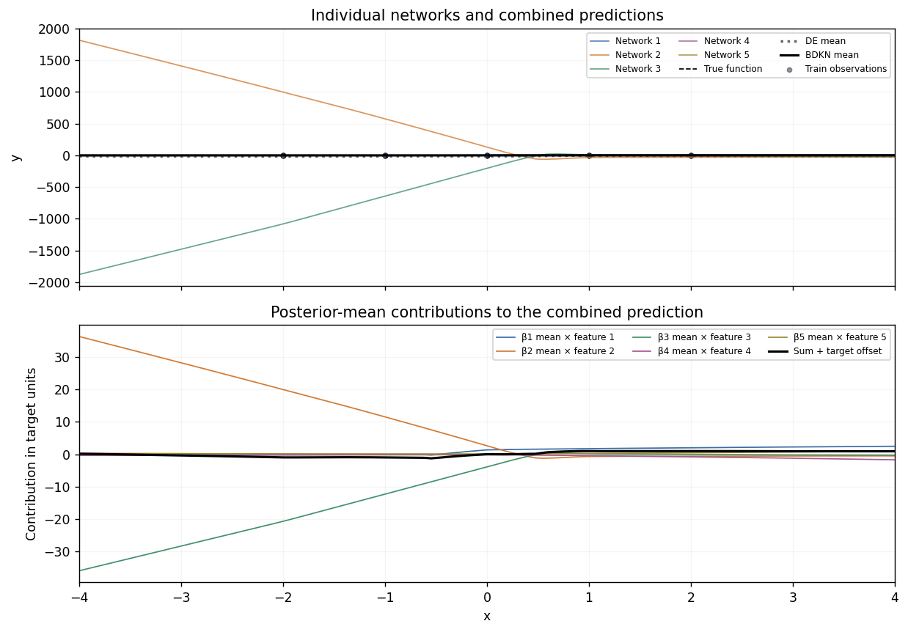
Each density panel uses its own X range for readability; coefficient intervals above share a common axis. Prior reference conditions on fitted noise. Contribution shares use held-out inputs; test targets are used only for scoring.
| Network | β mean | 95% low | 95% high | P(β > 0) | Contribution share | Test RMSE | Test NLL |
|---|---|---|---|---|---|---|---|
| 1 | 0.20847 | 0.20557 | 0.21136 | 1.00000 | 0.05250 | 7.08837 | 3.64370 |
| 2 | 0.02003 | 0.01973 | 0.02034 | 1.00000 | 0.45161 | 756.21986 | 11.94848 |
| 3 | 0.01917 | 0.01890 | 0.01944 | 1.00000 | 0.45498 | 800.75226 | 13.81142 |
| 4 | 0.10640 | 0.06478 | 0.14802 | 1.00000 | 0.02630 | 6.71394 | 3.12853 |
| 5 | -0.03730 | -0.06312 | -0.01148 | 0.00276 | 0.01461 | 10.61341 | 4.69559 |
Weight repulsion · BDKN
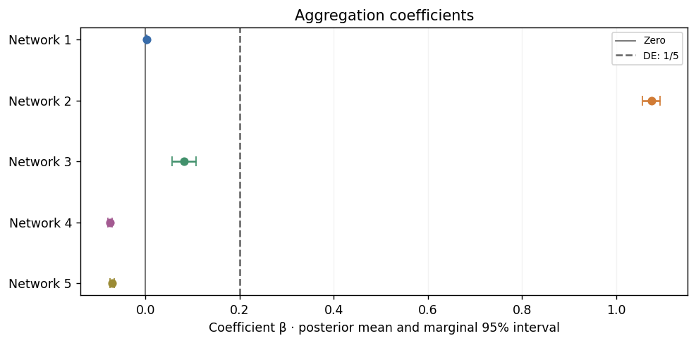
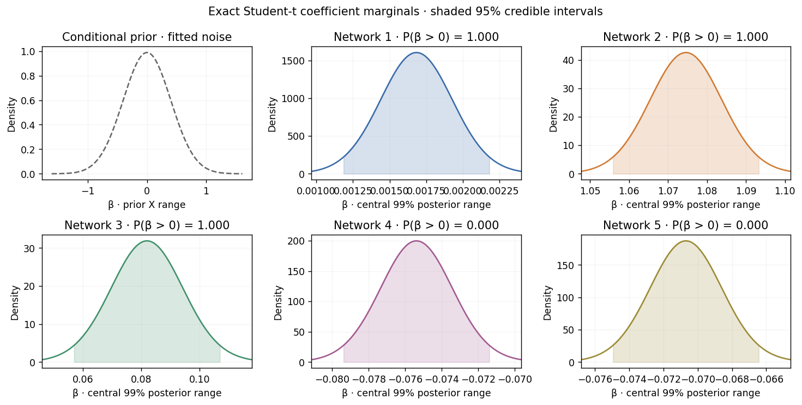
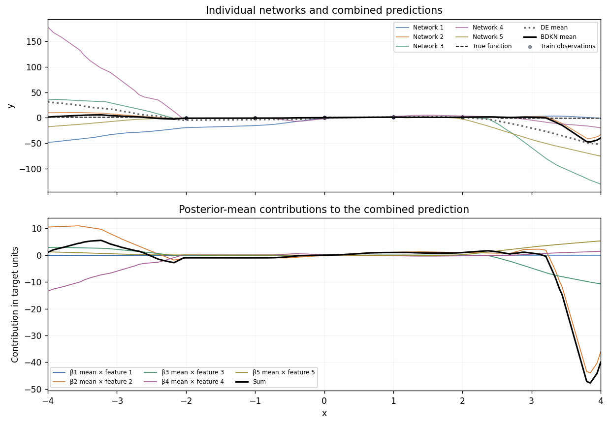
Each density panel uses its own X range for readability; coefficient intervals above share a common axis. Prior reference conditions on fitted noise. Contribution shares use held-out inputs; test targets are used only for scoring.
| Network | β mean | 95% low | 95% high | P(β > 0) | Contribution share | Test RMSE | Test NLL |
|---|---|---|---|---|---|---|---|
| 1 | 0.00168 | 0.00119 | 0.00218 | 1.00000 | 0.00218 | 18.28550 | 5.02129 |
| 2 | 1.07458 | 1.05589 | 1.09328 | 1.00000 | 0.51611 | 8.91493 | 207.26889 |
| 3 | 0.08198 | 0.05699 | 0.10698 | 1.00000 | 0.19212 | 38.92780 | 8.40700 |
| 4 | -0.07539 | -0.07937 | -0.07140 | 0.00000 | 0.18567 | 46.24689 | 528668514.35232 |
| 5 | -0.07069 | -0.07495 | -0.06643 | 0.00000 | 0.10392 | 23.87515 | 8.53209 |
First-order repulsion · BDKN
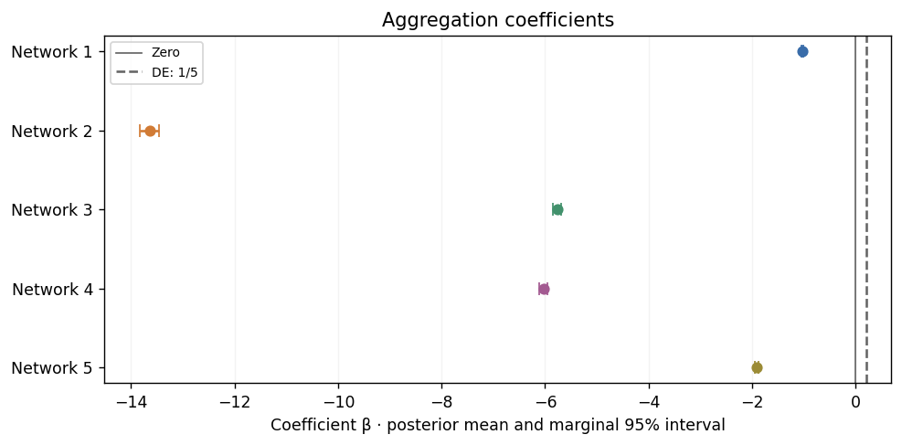
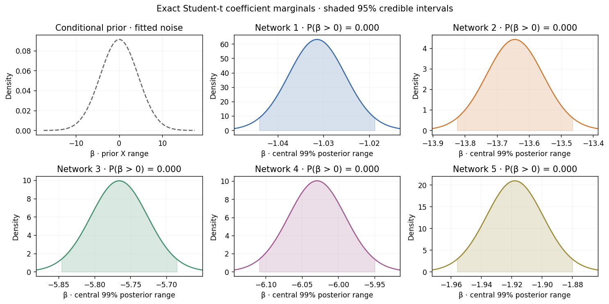
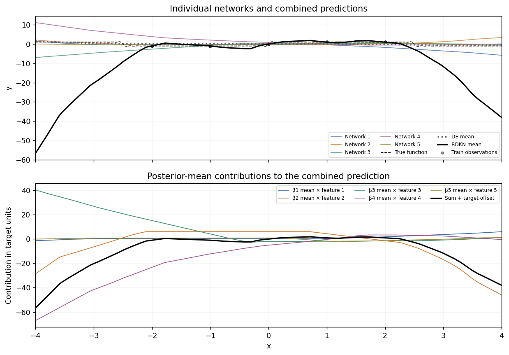
Each density panel uses its own X range for readability; coefficient intervals above share a common axis. Prior reference conditions on fitted noise. Contribution shares use held-out inputs; test targets are used only for scoring.
| Network | β mean | 95% low | 95% high | P(β > 0) | Contribution share | Test RMSE | Test NLL |
|---|---|---|---|---|---|---|---|
| 1 | -1.03139 | -1.04402 | -1.01877 | 0.00000 | 0.03845 | 1.96349 | 1.96251 |
| 2 | -13.64437 | -13.82424 | -13.46450 | 0.00000 | 0.28018 | 1.52581 | 1.66663 |
| 3 | -5.76560 | -5.84581 | -5.68539 | 0.00000 | 0.24438 | 2.78358 | 2.19026 |
| 4 | -6.02926 | -6.10871 | -5.94980 | 0.00000 | 0.41332 | 3.76448 | 2.21435 |
| 5 | -1.91785 | -1.95591 | -1.87978 | 0.00000 | 0.02367 | 0.84164 | 1.26948 |